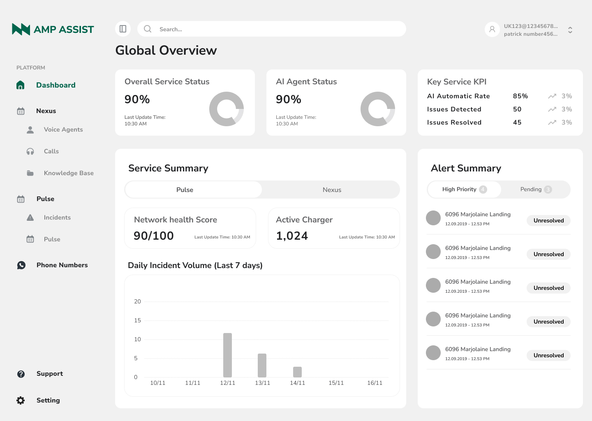

01
Unifying Pulse and Nexus in one web dashboard
We combined operational KPIs and support metrics into a single overview page, so CPO teams can monitor charger health, incident volume and AI performance without jumping between separate tools.